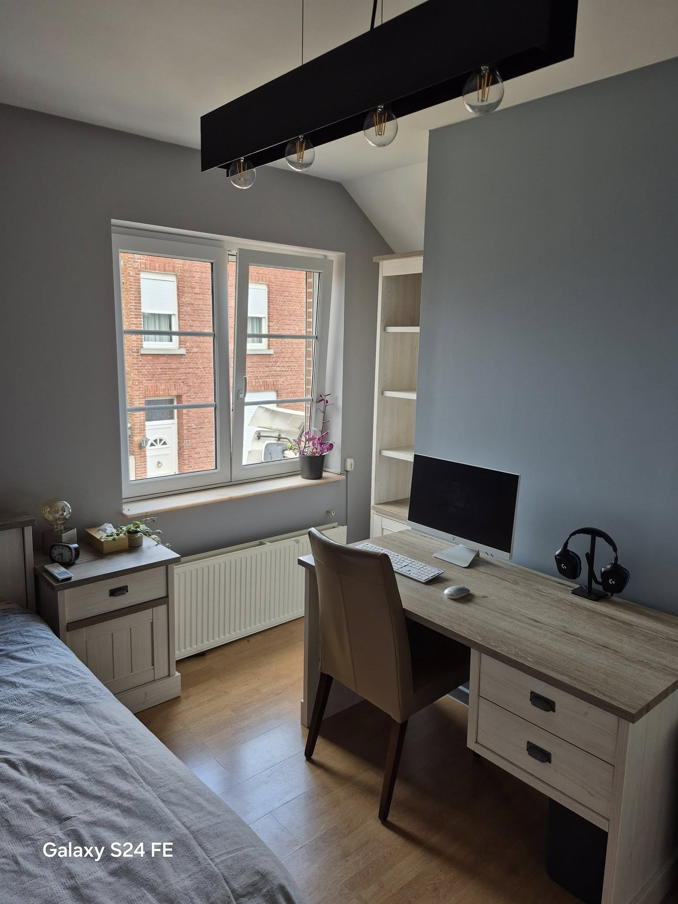
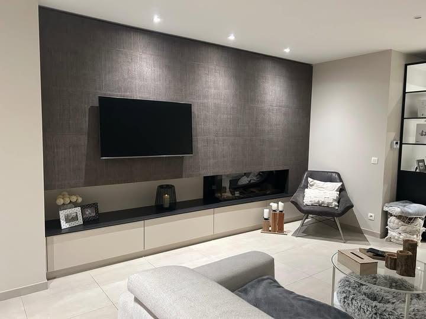
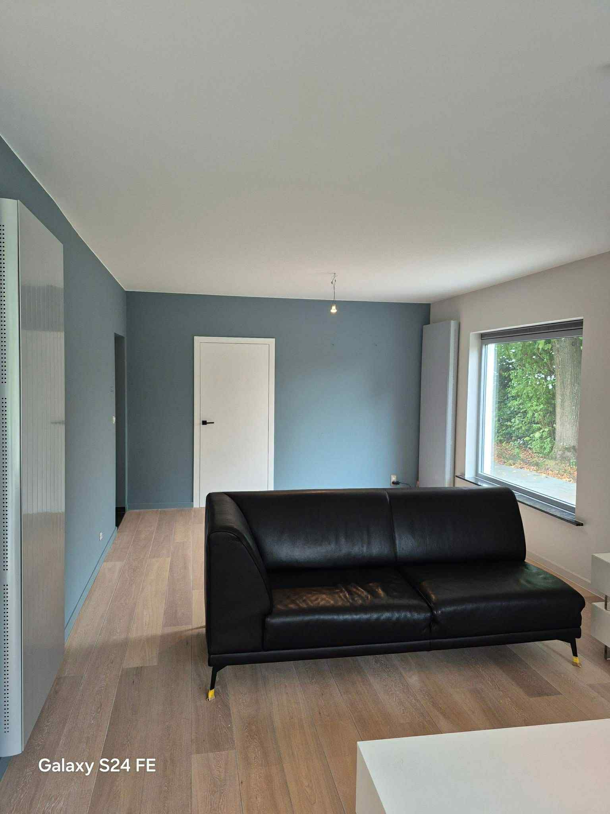
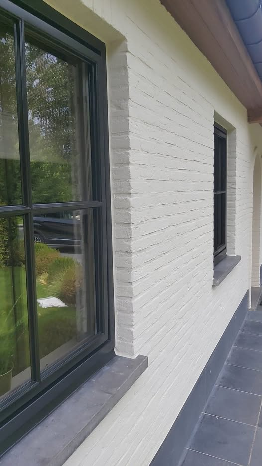
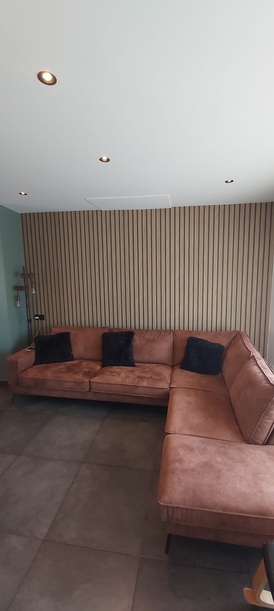
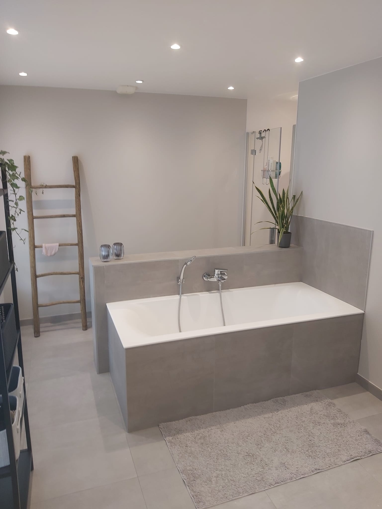
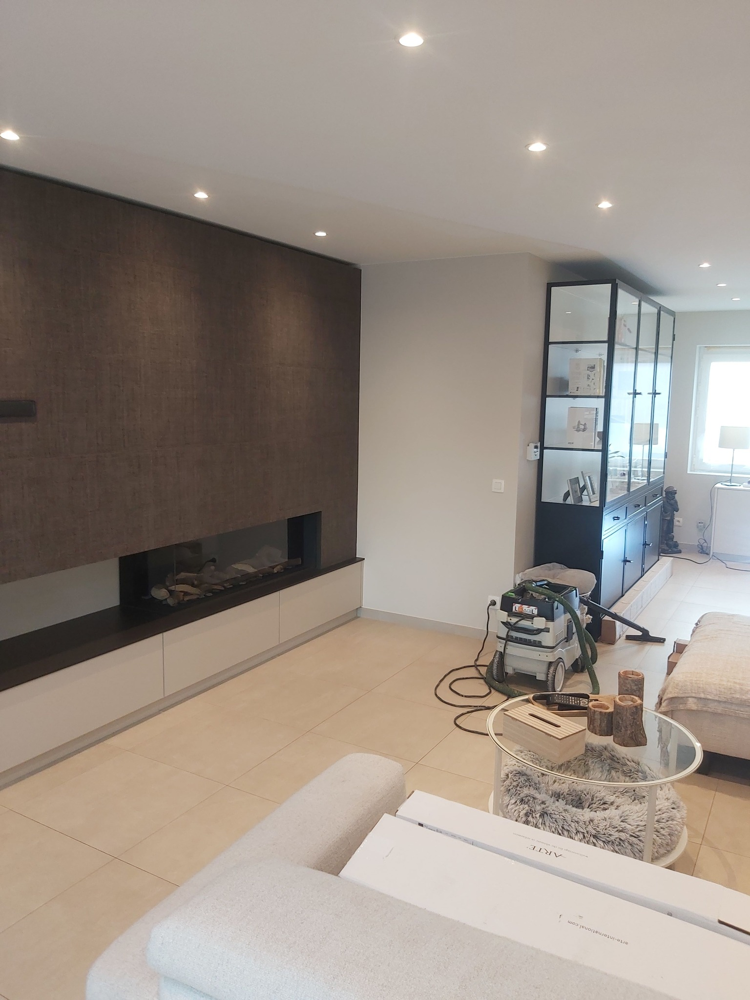
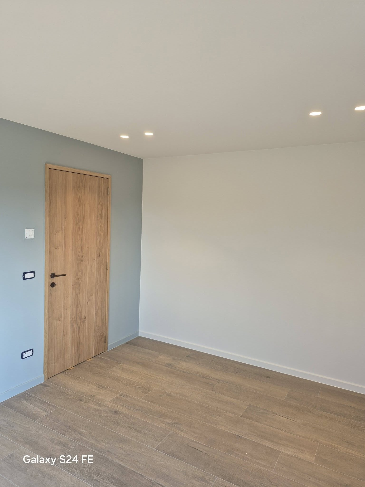
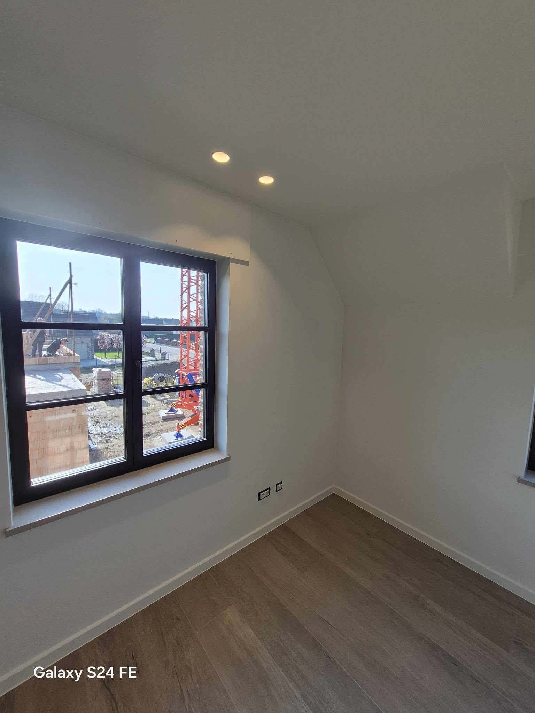

Strakke verfwerken met meer klasse, detail en afwerking.
Binnen, buiten en behangwerk in Aalst en omgeving, met een resultaat dat tot in de details klopt.
Colortime combineert vakmanschap met kleurgevoel en een nette oplevering. Geen overbodige show, wel een woning die direct rustiger, frisser en luxueuzer aanvoelt.
Strakke lijnen, propere werf en kleuren die echt passen bij je ruimte.
Wat we voor u doen
Gevestigd in Aalst - actief in de regio en omstreken als uw vertrouwde verver.
Bij Colortime focussen we op schilder- en behangwerken met een piekfijne afwerking. We werken met kwaliteitsproducten en zorgen voor een nette, duurzame oplevering.
Vraag offerte aan- Binnenschilderwerken (muren, plafonds, deuren, ramen)
- Buitenschilderwerken (gevel, houtwerk)
- Behangwerken & renovatievlies
- Voorbereiding: schuren, plamuren, primer
- Houtwerk lakken & vernissen
- Afkitten & kleine bijwerkingen
Zie het verschil van dichtbij
Sleep de schuiver van links naar rechts en vergelijk de ruimte voor en na de afwerking. Zo zie je meteen hoeveel rust, licht en strakheid een goede afwerking toevoegt.
Waarom Colortime?
Kwaliteit
We gebruiken alleen kwaliteitsverf en leveren een perfecte afwerking.
Ervaring
Jarenlange ervaring in schilder- en behangwerken in de hele regio.
Lokale verver
Uw vertrouwde schilder uit Aalst, snel ter plaatse en persoonlijk contact.
Wat klanten zeggen
Enkele realisaties










